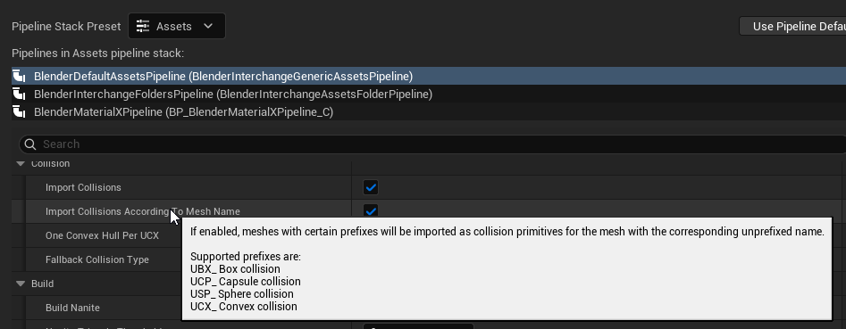
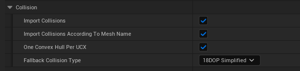
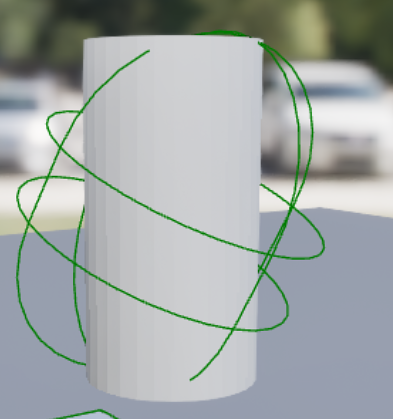
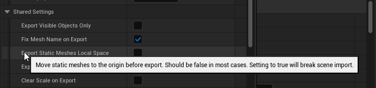
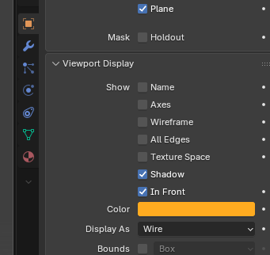
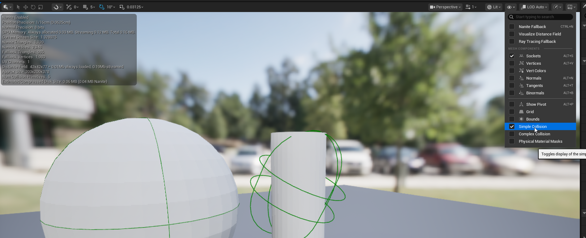
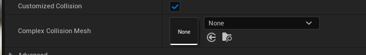
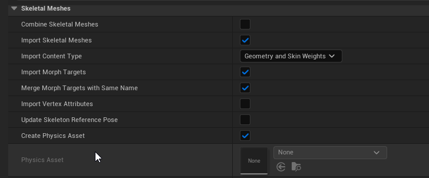

Collision Import
When importing models you will often want to import collision with the mesh. You could use the same mesh for collision but it is usually advantageous to represent your collision with simpler shapes for performance reasons. A common thing teams working in unreal engine 5 find out is that while Nanite can handle "millions of polygons", physics has no such treatment
To import collision with your model you can place additional meshes in the file with a few specific prefixes. This was also true in unreal engine's previous import framework.
| Collision Type | Prefix |
|---|---|
| Box | UBX_ |
| Capsule | UCP_ |
| Sphere | USP_ |
| Convex Hull | UCX_ |
If you ever don't remember which prefixes are available you can check the tooltip of the "Import Collisions According To Mesh Names" toggle that is part of the assets import pipeline.

Collision Naming and Multiple Colliders
You can put as many meshes as you want in the file as long as the prefix is correct and the name matches another mesh in the file. The name match is done between the first underscore and the last underscore. The sample blend files shared on our github list a collision example for those interested in seeing a blend file.
For a single mesh named MyMesh here are some valid names: - UBX_MyMesh -> Box Collider - UBX_MyMesh_01 -> Also valid - UBX_MyMesh_TheLesser -> Also valid... It's not important what comes after the last underscore. - UBX_MyMesh_TheGreat -> Also valid... It's not important what comes after the last underscore. For a mesh with multiple collision pieces you could have these meshes in the file and they would all get added to the simple collision of the mesh: - UBX_MyMesh_01 -> first box collider - UBX_MyMesh_02 -> second box collider - UCX_MyMesh_01 -> first convex hull
FAQ
Which collider type if best?
Given all these options you may be wondering which collision is the best to use. The answer is to prefer box, capsule and sphere colliders over convex hulls when possible. This will result in better performance in your game and a lower memory overhead. Checking for collision on a triangulated hull is significantly slower than any of the specialized primitive colliders that ship with unreal engine..
What is a Convex Hull?
Only some meshes are convex hulls. A convex hull has no cavities such that any 2 points in the hull can be connected in a straight without exiting the hull. Unreal will convert any mesh to a convex hull if it isn't already which may result in different results than what you expect. See this video for an example of what that looks like. https://youtu.be/hEGCfw9NW8Y?t=759
Also note there is an option to decompose your mesh into convex hulls which you can get by unchecking One Convex Hull Per UCX. I would NOT recommend doing this. From my testing it does not appear to work in this version of unreal engine and will result in no collision.

Do the shapes have to match?
Blender exports meshes not Box colliders, sphere colliders, and capsules. The rule of thumb is that you should try to get the mesh you are using for collision to be close to what you want in unreal. You can use a sphere in blender for a sphere collider and a scaled box for a box collider. This is pretty straight forward.
On shape that can give you trouble is a capsule. A capsule is a combination of 2 spheres and a cylinder. If you try to just export a cyllinder you will not get what you expect because unreal will try to fit a capsule around your cylinder. The reason unreal has capsule colliders and not cylinder collider

In general unreal will try to fit a collider around the vertices of the mesh you give it with better results for closer shapes. For example an ico-sphere is not a perfect mathematical sphere but should be close enough to get good results.
Do I need to Parent Collision to my mesh?
It depends. In general I recommend you do so. If you are using USD as your intermediate format it is required while for FBX and GLTF it is only optional. Parenting collision meshes might also be easier for you in Blender since the collision will move with the object. Feel free to hit up our discord if you run into issues related to mesh parenting. https://discord.gg/fc2HYwJS
It's also worth noting that if you enable "Export Static Meshes Local Space" in the translator settings in the exporter you will need to parent collision meshes to the mesh they are collision for. We generally do not recommend enabling this option unless you have a reason because it also causes issues with importing scenes into unreal.

My collision is blocking the model. How do I get around that?
In blender you can change your collision objects to render as wireframe under your Viewport display. You can also move them to their own collection or sub-collection to make it easier to hide them.

Where can I see simple collision?
You can view the collision generated in the static mesh editor. To see the simple collision select Show > Collision in the top right

Why should I not just update this all in Unreal?
You can author collision in unreal engine. However the advantage of authoring it in Blender is that you can change the collision and mesh at the same time. Additionally if you create a copy of your mesh with a small variation you will also find that you have to author the collision again
What is complex collision? Should I just use that?
Complex collision is generated based on the mesh and is much more expensive in general than simple collision. It has the same number of triangles as your original mesh by default. You can imagine that running a collision check on a bunch of random triangles will be a lot less efficient than checking against a few simplified shapes like boxes.
In general it's best to avoid using complex collision when possible and setting meshes to "Use Simple as Complex" when you don't need them. It's also worth noting that you can assign another mesh to act as complex collision in unreal's static mesh editor. Alternatively you can use a specific LOD for your collision. Refer to our guide on Importing LODs

If setting a custom complex collision mesh something people would like automated feel free to stop by in our discord and make a feature request! You can also use the LOD method to import collision to similar results. The blender interchange plugin also lets you specify the LOD index as part of the import pipeline.
Setting an LOD as complex collision
Simply open the static mesh post import and set "LOD for Collision" under General Settings to the desired LOD index. The collision mesh can also be specified on import if that's easier for you.

LODs and Collision
Refer to our guide on LOD import for more info but importing simple collision on something with LODs is as simple as importing collision for LOD0.
In the example used for LOD import we would add a mesh named USP_LOD0_Sphere to add a sphere collider. Note that this LOD import has 3 LODs being imported - 3 sphere of different size
Unreal does not store simple collision per LOD and will only care about LOD0. If you add collision for LOD1 it will simply be ignored. As noted previously you can specify a specific LOD to use as complex collision.

How do I set up collision for Skeletal meshes?
Support for importing collisions for a skeletal mesh is not supported by unreal engine. You will need to create a physics asset on unreal's side. Physics assets specify which physics bodies to use and also specify skinning settings and simulation settings for things like ragdoll.
Unreal will make an initial physics asset for you when you first import a skeletal mesh but it will likely need to be edited. You can specify existing unreal engine physics assets when importing or reimporting skeletal meshes.
